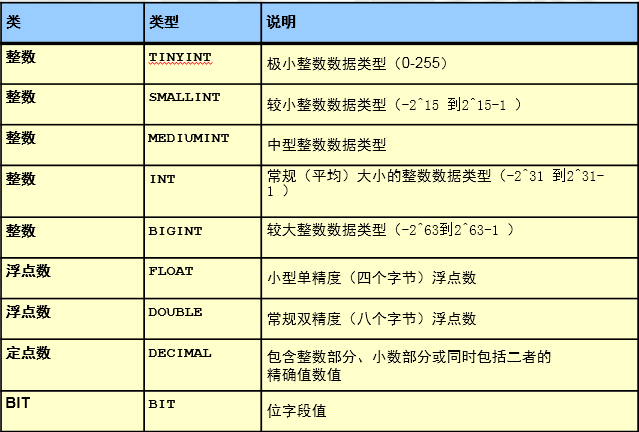
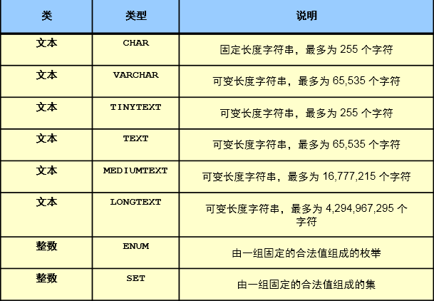
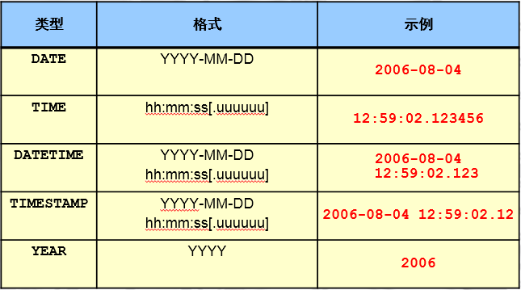
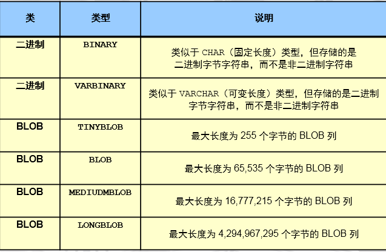
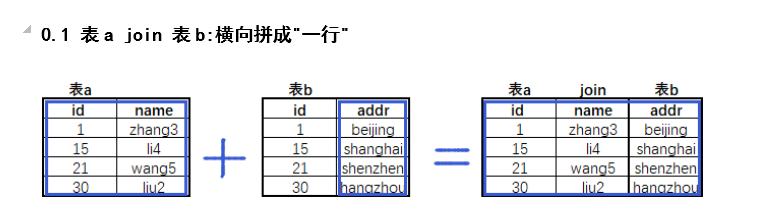

1、SQL介绍¶
2、常用SQL分类¶
3、数据类型、表属性、字符集¶
3.1 数据类型¶
3.1.1 作用¶
3.1.2 种类¶
数值类型

image
字符类型

image
char(11) ：
定长 的字符串类型,在存储字符串时，最大字符长度11个，立即分配11个字符长度的存储空间，如果存不满，空格填充。
varchar(11):
变长的字符串类型看，最大字符长度11个。在存储字符串时，自动判断字符长度，按需分配存储空间。
enum('bj','tj','sh')：
枚举类型，比较适合于将来此列的值是固定范围内的特点，可以使用enum,可以很大程度的优化我们的索引结构。
时间类型

image
列值不能为空，也是表设计的规范，尽可能将所有的列设置为非空。可以设置默认值为0 unique key ：唯一键 列值不能重复 unsigned ：无符号 针对数字列，非负数。
其他属性: key :索引 可以在某列上建立索引，来优化查询
DATETIME
范围为从 1000-01-01 00:00:00.000000 至 9999-12-31 23:59:59.999999。
TIMESTAMP
1970-01-01 00:00:00.000000 至 2038-01-19 03:14:07.999999。
timestamp会受到时区的影响
二进制类型

image
3.2 表属性¶
3.2.1 列属性¶
约束(一般建表时添加):
**primary key** ：主键约束
设置为主键的列，此列的值必须非空且唯一，主键在一个表中只能有一个，但是可以有多个列一起构成。
**not null** ：非空约束
列值不能为空，也是表设计的规范，尽可能将所有的列设置为非空。可以设置默认值为0
**unique key** ：唯一键
列值不能重复
**unsigned** ：无符号
针对数字列，非负数。
其他属性:
**key** :索引
可以在某列上建立索引，来优化查询,一般是根据需要后添加
**default** :默认值
列中，没有录入值时，会自动使用default的值填充
**auto_increment**:自增长
针对数字列，顺序的自动填充数据（默认是从1开始，将来可以设定起始点和偏移量）
**comment ** : 注释
3.2.2 表的属性¶
3.3 字符集和校对规则¶
3.3.1 字符集¶
3.3.2 校对规则（排序规则）¶
4、DDL应用¶
4.1 数据定义语言¶
4.2 库定义¶
4.2.1 创建¶
4.2.1 创建数据库¶
create database school;
create schema sch;
show charset; #查看数据支持的字符集
show collation; #查看所有字符集支持的校对规则 后面_ci是大小不敏感， 后面_bin大小写敏感
CREATE DATABASE test CHARSET utf8;
create database xyz charset utf8mb4 collate utf8mb4_bin; #创建xyz库字符集utf8mb4校验规则大小敏感
建库规范：
1.库名不能有大写字母
2.建库要加字符集
3.库名不能有数字开头
4.库名要和业务相关
建库标准语句
4.2.2 删除(生产中禁止使用)¶
4.2.3 修改¶
4.2.4 查询库相关信息（DQL）¶
4.3 表定义¶
4.3.1 创建¶
4.3.2 建表¶
USE school;
CREATE TABLE stu(
id INT NOT NULL PRIMARY KEY AUTO_INCREMENT COMMENT '学号',
sname VARCHAR(255) NOT NULL COMMENT '姓名',
sage TINYINT UNSIGNED NOT NULL DEFAULT 0 COMMENT '年龄',
sgender ENUM('m','f','n') NOT NULL DEFAULT 'n' COMMENT '性别' ,
sfz CHAR(18) NOT NULL UNIQUE COMMENT '身份证',
intime TIMESTAMP NOT NULL DEFAULT NOW() COMMENT '入学时间'
) ENGINE=INNODB CHARSET=utf8mb4 COMMENT '学生表';
建表规范：
4.3.2 删除(生产中禁用命令)¶
4.3.3 修改¶
- 在stu表中添加qq列
- 在sname后加微信列
- 在id列前加一个新列num
- 把刚才添加的列都删掉(危险)
- 修改sname数据类型的属性
- 将sgender 改为 sg 数据类型改为 CHAR 类型
扩展： 修改表名
rename table 旧表名 to 新表名;
alter table 表名 drop primary key; # 删除主键
mysql> alter table student drop primary key;
ERROR 1075 (42000): Incorrect table definition; there can be only one auto column and it must be defined as a key
# 列的属性还带有AUTO_INCREMENT，那么要先将这个列的自动增长属性去掉，才可以删除主键。
mysql> alter table student modify id int(11);
mysql> alter table student drop primary key;
Query OK, 0 rows affected (0.01 sec)
Records: 0 Duplicates: 0 Warnings: 0
4.3.4 表属性查询（DQL）¶
5. DCL应用 ****¶
6. DML应用¶
6.1 作用¶
6.2 insert¶
--- 最标准的insert语句
INSERT INTO stu(id,sname,sage,sg,sfz,intime)
VALUES
(1,'zs',18,'m','123456',NOW());
SELECT * FROM stu;
--- 省事的写法
INSERT INTO stu
VALUES
(2,'ls',18,'m','1234567',NOW());
--- 针对性的录入数据
INSERT INTO stu(sname,sfz)
VALUES ('w5','34445788');
--- 同时录入多行数据
INSERT INTO stu(sname,sfz)
VALUES
('w55','3444578d8'),
('m6','1212313'),
('aa','123213123123');
SELECT * FROM stu;
6.3 update¶
6.4 delete（危险！！）¶
全表删除:
DELETE FROM stu
truncate table stu;
区别:
delete: DML操作, 是逻辑性质删除,逐行进行删除,速度慢.
truncate: DDL操作,对与表段中的数据页进行清空,速度快.
伪删除：用update来替代delete，最终保证业务中查不到（select）即可
1.添加状态列
ALTER TABLE stu ADD state TINYINT NOT NULL DEFAULT 1 ;
SELECT * FROM stu;
2. UPDATE 替代 DELETE
UPDATE stu SET state=0 WHERE id=6;
3. 业务语句查询
SELECT * FROM stu WHERE state=1;
7. DQL应用(select )¶
7.1 单独使用¶
-- select @@xxx 查看系统参数
SELECT @@port;
SELECT @@basedir;
SELECT @@datadir;
SELECT @@socket;
SELECT @@server_id;
SELECT @@innodb_flush_log_at_trx_commit; # 复杂的语句记不住可以用下面show语句过滤查询
SHOW VARIABLES LIKE 'innodb%';
-- select 函数();
SELECT NOW();
SELECT DATABASE();
SELECT USER();
SELECT CONCAT("hello world");
SELECT CONCAT(USER,"@",HOST) FROM mysql.user;
SELECT GROUP_CONCAT(USER,"@",HOST) FROM mysql.user;
https://dev.mysql.com/doc/refman/5.7/en/func-op-summary-ref.html?tdsourcetag=s_pcqq_aiomsg
7.2 单表子句-from¶
例子: -- 查询stu中所有的数据(不要对大表进行操作)
-- 查询stu表中,学生姓名和入学时间
===================== oldguo带大家学单词：
world ===>世界
city ===>城市
country ===>国家
countrylanguage ===>国家语言
city:城市表
DESC city;
ID : 城市ID
NAME : 城市名
CountryCode: 国家代码，比如中国CHN 美国USA
District : 区域
Population : 人口
SHOW CREATE TABLE city;
SELECT * FROM city WHERE id<10;
======================
7.3 单表子句-where¶
7.3.1 where配合等值查询¶
例子: -- 查询中国(CHN)所有城市信息
-- 查询北京市的信息
-- 查询甘肃省所有城市信息
7.3.2 where配合比较操作符(> < >= <= <>)¶
例子: -- 查询世界上少于100人的城市
7.3.3 where配合逻辑运算符(and or )¶
例子: -- 中国人口数量大于500w
-- 中国或美国城市信息
7.3.4 where配合模糊查询¶
例子: -- 查询省的名字前面带guang开头的
7.3.5 where配合in语句¶
-- 中国或美国城市信息
7.3.6 where配合between and¶
例子: -- 查询世界上人口数量大于100w小于200w的城市信息
SELECT * FROM city WHERE population >1000000 AND population <2000000;
SELECT * FROM city WHERE population BETWEEN 1000000 AND 2000000;
7.4 group by + 常用聚合函数¶
7.4.1 作用¶
7.4.2 常用聚合函数¶
7.4.3 例子：¶
例子1：统计世界上每个国家的总人口数.
例子2： 统计中国各个省的总人口数量(练习)
例子3：统计世界上每个国家的城市数量(练习)
7.5 having¶
例子4：统计中国每个省的总人口数，只打印总人口数小于100
SELECT district,SUM(Population)
FROM city
WHERE countrycode='chn'
GROUP BY district
HAVING SUM(Population) < 1000000 ;
7.6 order by + limit¶
7.6.1 作用¶
7.6.2 应用案例¶
- 查看中国所有的城市，并按人口数进行排序(从大到小)
- 统计中国各个省的总人口数量，按照总人口从大到小排序
SELECT district AS 省 ,SUM(Population) AS 总人口
FROM city
WHERE countrycode='chn'
GROUP BY district
ORDER BY 总人口 DESC ;
- 统计中国,每个省的总人口,找出总人口大于500w的,并按总人口从大到小排序,只显示前三名
SELECT district, SUM(population) FROM city
WHERE countrycode='CHN'
GROUP BY district
HAVING SUM(population)>5000000
ORDER BY SUM(population) DESC
LIMIT 3 ;
LIMIT N ,M --->跳过N,显示一共M行
LIMIT 5,5
LIMIT M OFFSET N -->显示M行， 跳过N行
SELECT district, SUM(population) FROM city
WHERE countrycode='CHN'
GROUP BY district
HAVING SUM(population)>5000000
ORDER BY SUM(population) DESC
LIMIT 5,5;
7.7 distinct：去重复¶
7.8 联合查询- union all¶
-- 中国或美国城市信息
SELECT * FROM city
WHERE countrycode IN ('CHN' ,'USA');
SELECT * FROM city WHERE countrycode='CHN'
UNION ALL
SELECT * FROM city WHERE countrycode='USA'
说明:一般情况下,我们会将 IN 或者 OR 语句 改写成 UNION ALL,来提高性能
UNION 去重复
UNION ALL 不去重复
7.9 join 多表连接查询¶
7.9.0 案例准备¶
按需求创建一下表结构:
use school
student ：学生表
sno： 学号
sname：学生姓名
sage： 学生年龄
ssex： 学生性别
teacher ：教师表
tno： 教师编号
tname：教师名字
course ：课程表
cno： 课程编号
cname：课程名字
tno： 教师编号
score ：成绩表
sno： 学号
cno： 课程编号
score：成绩
-- 项目构建
drop database school;
CREATE DATABASE school CHARSET utf8;
USE school
CREATE TABLE student(
sno INT NOT NULL PRIMARY KEY AUTO_INCREMENT COMMENT '学号',
sname VARCHAR(20) NOT NULL COMMENT '姓名',
sage TINYINT UNSIGNED NOT NULL COMMENT '年龄',
ssex ENUM('f','m') NOT NULL DEFAULT 'm' COMMENT '性别'
)ENGINE=INNODB CHARSET=utf8;
CREATE TABLE course(
cno INT NOT NULL PRIMARY KEY COMMENT '课程编号',
cname VARCHAR(20) NOT NULL COMMENT '课程名字',
tno INT NOT NULL COMMENT '教师编号'
)ENGINE=INNODB CHARSET utf8;
CREATE TABLE sc (
sno INT NOT NULL COMMENT '学号',
cno INT NOT NULL COMMENT '课程编号',
score INT NOT NULL DEFAULT 0 COMMENT '成绩'
)ENGINE=INNODB CHARSET=utf8;
CREATE TABLE teacher(
tno INT NOT NULL PRIMARY KEY COMMENT '教师编号',
tname VARCHAR(20) NOT NULL COMMENT '教师名字'
)ENGINE=INNODB CHARSET utf8;
INSERT INTO student(sno,sname,sage,ssex)
VALUES (1,'zhang3',18,'m');
INSERT INTO student(sno,sname,sage,ssex)
VALUES
(2,'zhang4',18,'m'),
(3,'li4',18,'m'),
(4,'wang5',19,'f');
INSERT INTO student
VALUES
(5,'zh4',18,'m'),
(6,'zhao4',18,'m'),
(7,'ma6',19,'f');
INSERT INTO student(sname,sage,ssex)
VALUES
('oldboy',20,'m'),
('oldgirl',20,'f'),
('oldp',25,'m');
INSERT INTO teacher(tno,tname) VALUES
(101,'oldboy'),
(102,'hesw'),
(103,'oldguo');
DESC course;
INSERT INTO course(cno,cname,tno)
VALUES
(1001,'linux',101),
(1002,'python',102),
(1003,'mysql',103);
DESC sc;
INSERT INTO sc(sno,cno,score)
VALUES
(1,1001,80),
(1,1002,59),
(2,1002,90),
(2,1003,100),
(3,1001,99),
(3,1003,40),
(4,1001,79),
(4,1002,61),
(4,1003,99),
(5,1003,40),
(6,1001,89),
(6,1003,77),
(7,1001,67),
(7,1003,82),
(8,1001,70),
(9,1003,80),
(10,1003,96);
SELECT * FROM student;
SELECT * FROM teacher;
SELECT * FROM course;
SELECT * FROM sc;
7.9.1 语法¶

image
查询张三的家庭住址
7.9.2 例子：¶
- 查询一下世界上人口数量小于100人的城市名和国家名
SELECT b.name ,a.name ,a.population
FROM city AS a
JOIN country AS b
ON b.code=a.countrycode
WHERE a.Population<100
- 查询城市shenyang，城市人口，所在国家名（name）及国土面积（SurfaceArea）
SELECT a.name,a.population,b.name ,b.SurfaceArea
FROM city AS a JOIN country AS b
ON a.countrycode=b.code
WHERE a.name='shenyang';
7.9.3 别名¶
列别名,表别名
SELECT
a.Name AS an ,
b.name AS bn ,
b.SurfaceArea AS bs,
a.Population AS bp
FROM city AS a JOIN country AS b
ON a.CountryCode=b.Code
WHERE a.name ='shenyang';
7.9.4 多表SQL练习题¶
- 统计zhang3,学习了几门课
- 查询zhang3,学习的课程名称有哪些?
SELECT st.sname , GROUP_CONCAT(co.cname)
FROM student AS st
JOIN sc
ON st.sno=sc.sno
JOIN course AS co
ON sc.cno=co.cno
WHERE st.sname='zhang3'
- 查询oldguo老师教的学生名.
SELECT te.tname ,GROUP_CONCAT(st.sname)
FROM student AS st
JOIN sc
ON st.sno=sc.sno
JOIN course AS co
ON sc.cno=co.cno
JOIN teacher AS te
ON co.tno=te.tno
WHERE te.tname='oldguo';
- 查询oldguo所教课程的平均分数
SELECT te.tname,AVG(sc.score)
FROM teacher AS te
JOIN course AS co
ON te.tno=co.tno
JOIN sc
ON co.cno=sc.cno
WHERE te.tname='oldguo'
4.1 每位老师所教课程的平均分,并按平均分排序
SELECT te.tname,AVG(sc.score)
FROM teacher AS te
JOIN course AS co
ON te.tno=co.tno
JOIN sc
ON co.cno=sc.cno
GROUP BY te.tname
ORDER BY AVG(sc.score) DESC ;
- 查询oldguo所教的不及格的学生姓名
SELECT te.tname,st.sname,sc.score
FROM teacher AS te
JOIN course AS co
ON te.tno=co.tno
JOIN sc
ON co.cno=sc.cno
JOIN student AS st
ON sc.sno=st.sno
WHERE te.tname='oldguo' AND sc.score<60;
5.1 查询所有老师所教学生不及格的信息
SELECT te.tname,st.sname,sc.score
FROM teacher AS te
JOIN course AS co
ON te.tno=co.tno
JOIN sc
ON co.cno=sc.cno
JOIN student AS st
ON sc.sno=st.sno
WHERE sc.score<60;
7.9.5 综合练习¶
1. 查询平均成绩大于60分的同学的学号和平均成绩；
2. 查询所有同学的学号、姓名、选课数、总成绩；
3. 查询各科成绩最高和最低的分：以如下形式显示：课程ID，最高分，最低分
4. 统计各位老师,所教课程的及格率
5. 查询每门课程被选修的学生数
6. 查询出只选修了一门课程的全部学生的学号和姓名
7. 查询选修课程门数超过1门的学生信息
8. 统计每门课程:优秀(85分以上),良好(70-85),一般(60-70),不及格(小于60)的学生列表
9. 查询平均成绩大于85的所有学生的学号、姓名和平均成绩
8.information_schema.tables视图¶
DESC information_schema.TABLES
TABLE_SCHEMA ---->库名
TABLE_NAME ---->表名
ENGINE ---->引擎
TABLE_ROWS ---->表的行数
AVG_ROW_LENGTH ---->表中行的平均行（字节）
INDEX_LENGTH ---->索引的占用空间大小（字节）
- 查询整个数据库中所有库和所对应的表信息
- 统计所有库下的表个数
- 查询所有innodb引擎的表及所在的库
- 统计world数据库下每张表的磁盘空间占用
SELECT table_name,CONCAT((TABLE_ROWS*AVG_ROW_LENGTH+INDEX_LENGTH)/1024," KB") AS size_KB
FROM information_schema.tables WHERE TABLE_SCHEMA='world';
- 统计所有数据库的总的磁盘空间占用
SELECT
TABLE_SCHEMA,
CONCAT(SUM(TABLE_ROWS*AVG_ROW_LENGTH+INDEX_LENGTH)/1024," KB") AS Total_KB
FROM information_schema.tables
GROUP BY table_schema;
mysql -uroot -p123 -e "SELECT TABLE_SCHEMA,CONCAT(SUM(TABLE_ROWS*AVG_ROW_LENGTH+INDEX_LENGTH)/1024,' KB') AS Total_KB FROM information_schema.tables GROUP BY table_schema;"
- 生成整个数据库下的所有表的单独备份语句
模板语句：
mysqldump -uroot -p123 world city >/tmp/world_city.sql
SELECT CONCAT("mysqldump -uroot -p123 ",table_schema," ",table_name," >/tmp/",table_schema,"_",table_name,".sql" )
FROM information_schema.tables
WHERE table_schema NOT IN('information_schema','performance_schema','sys')
INTO OUTFILE '/tmp/bak.sh' ;
CONCAT("mysqldump -uroot -p123 ",table_schema," ",table_name," >/tmp/",table_schema,"_",table_name,".sql" )
- 107张表，都需要执行以下2条语句
ALTER TABLE world.city DISCARD TABLESPACE;
ALTER TABLE world.city IMPORT TABLESPACE;
SELECT CONCAT("alter table ",table_schema,".",table_name," discard tablespace")
FROM information_schema.tables
WHERE table_schema='world'
INTO OUTFILE '/tmp/dis.sql';
9. show 命令¶
show databases; #查看所有数据库
show tables; #查看当前库的所有表
SHOW TABLES FROM #查看某个指定库下的表
show create database world #查看建库语句
show create table world.city #查看建表语句
show grants for root@'localhost' #查看用户的权限信息
show charset； #查看字符集
show collation #查看校对规则
show processlist; #查看数据库连接情况
show index from #表的索引情况
show status #数据库状态查看
SHOW STATUS LIKE '%lock%'; #模糊查询数据库某些状态
SHOW VARIABLES #查看所有配置信息
SHOW variables LIKE '%lock%'; #查看部分配置信息
show engines #查看支持的所有的存储引擎
show engine innodb status\G #查看InnoDB引擎相关的状态信息
show binary logs #列举所有的二进制日志
show master status #查看数据库的日志位置信息
show binlog evnets in #查看二进制日志事件
show slave status \G #查看从库状态
SHOW RELAYLOG EVENTS #查看从库relaylog事件信息
desc (show colums from city) #查看表的列定义信息
http://dev.mysql.com/doc/refman/5.7/en/show.html